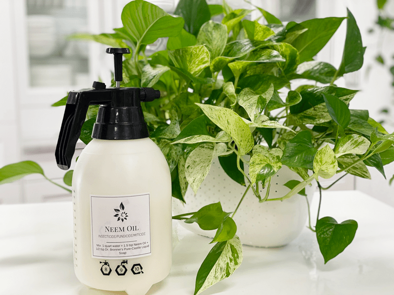

Neem Oil Solution – Pest Treatment
Neem oil is used as an insecticide and is an effective and natural way to get rid of bugs on houseplants. Below you will find some tips and tricks on how I use it for insect control, and I’ll also show you how to make your own spray for plants using my neem oil insecticide recipe.

Sometimes it seems that no matter how careful we are, our precious houseplants become infested with some bug or another. Each time I find a pest, my heart sinks a little. At first, it makes you doubt your plant-parenthood qualifications, but once you have some knowledge under your belt, you will be able to eradicate those buggers in no time. So let’s dive into the topic at hand.
What Is Neem Oil?
Neem oil is a naturally occurring insecticide that is found in the seeds of the Indian neem tree. The oil is extracted from the tree seeds and is either sold in its pure form or mixed with other ingredients to make pesticide sprays. Thankfully, neem oil isn’t poisonous and is very safe to use.
How It Works
It has a chemical effect on the bugs that eat it, which eventually ends up killing them. It works by messing with the brains and hormones of the bugs, to the point in which they stop eating and mating. It also works to smother the pests, which kills them faster. On top of that, neem oil repels them, and it has a slight residual effect to keep bugs away longer than other organic pest control methods.

How Long Does It Take to Work?
Obviously, this all depends on the severity of your infestation. Neem oil won’t kill all of the pests on contact, so it might take a few days, weeks, or even months for all of the bugs to disappear from the plant. So with that said, it is crucial to keep the infected plant isolated until ALL signs of the infestation are gone.
What Kind of Pests Does It Work On?
Neem oil works to kill all types of houseplant pests. If you are into outdoor gardening or plant scaping, neem oil can be used outside to help control bugs like destructive caterpillars, beetles, worms, and any other plant-eating insect.
How Do I Use It?
The neem oil solution can be used on the entirety of the plant, leaves, and soil. You can drench the soil to kill annoying fungus gnats, and in return, the drenched soil can be absorbed by the plant and work as a systemic pesticide as well. When I use this solution, I drench the plant.

My neem oil solution is something I use for preventative care.
Before You Use
- I felt it was important to note that neem oil has a strong smell that many people don’t like. The smell goes away once it dries, but it can be overpowering if you’re spraying it on a lot of your houseplants at once indoors. During the winter, I place the plants in the tub or shower and put the bathroom fan on. During the summer, I tend to take the plants outside and give them a good neem oil shower.
Neem Oil Solution
I quickly upgraded from a quart-sized spray bottle to a much larger one that is easier on the hands, has a steady stream to help with saturating the plant, and holds quite a bit for future treatments. (see photos) I picked it up at Lowe’s Department Store for roughly $5. LOVE IT!
Yields 1 quart
Yields 1 gallon
- 3 Tbsp neem oil
- 1 gallon water
- 2 tsp Dr. Bronner’s mild liquid dish soap.
Treatment
- Combine the ingredients in a spray bottle and label. You can use it immediately. If you have any left, store in a safe place and shake it each time you use it.
- Once you see pests on your plants, it’s essential to begin treatment right away.
- Isolate the plant in question.
- I always start by spraying the plant down with water. The force of the water stream will help knock off a lot of the pests.
- Then I check the plant, and if I can visibly see any of the pests on the plant, I spot treat them with a q-tip and rubbing alcohol solution. Click (here) to learn more about that.
- From there, I spray the entire plant with the neem oil solution, taking care to spray under all of the leaves and thoroughly wet every nook and cranny of the plant.
- Do this in the sink, tub, or shower.
- Do not do this in the place where you have the plant staged. You want to avoid getting the oil on your furniture or flooring.
- For plants that are heavily infested, spray your plant every few weeks until you no longer see any bugs, and then spray it every month as a repellent to keep them from coming back.

© AmieSue.com